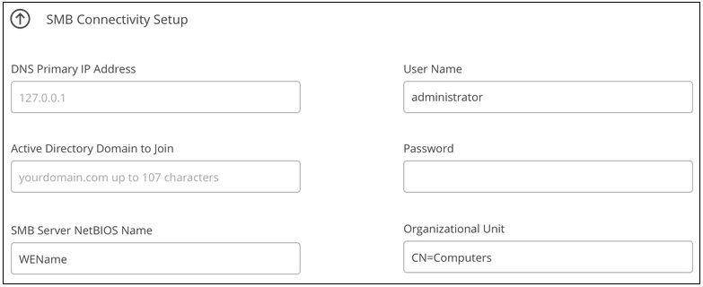
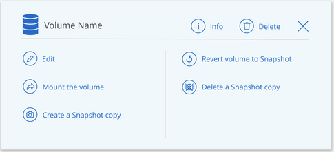
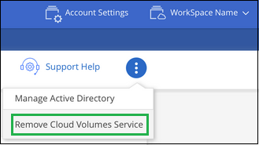

ドキュメントの変更をリクエスト
ドキュメントの変更をリクエスト GitHub で編集
GitHub で編集 寄稿者向けガイド
寄稿者向けガイドCloud Volumes Service for AWS を管理する
Cloud Manager では、に基づいてクラウドボリュームを作成できます 。 "Cloud Volumes Service for AWS" サブスクリプション。すでに作成したクラウドボリュームを Cloud Volumes Service インターフェイスから検出して、作業環境に追加することもできます。

|
をリリースしています "ONTAP 対応の Amazon FSX"では、 Cloud Manager で新しい CVS for AWS の作業環境を作成することはできなくなりました。ただし、以前に Cloud Manager に CVS for AWS の作業環境を追加していた場合は、引き続きボリュームを作成および管理できます。 |
クラウドボリュームを作成
Cloud Volumes Service 作業環境にすでにボリュームが存在する構成の場合は、次の手順で新しいボリュームを追加できます。
ボリュームが存在しない構成では、 Cloud Volumes Service for AWS サブスクリプションのセットアップ後に、 Cloud Manager から直接最初のボリュームを作成できます。これまでは、最初のボリュームを Cloud Volumes Service ユーザインターフェイスで直接作成する必要がありました。
-
AWS で SMB を使用する場合は、 DNS と Active Directory を設定しておく必要があります。
-
SMB ボリュームを作成する場合は、接続可能な Windows Active Directory サーバが必要です。この情報は、ボリュームの作成時に入力します。また、管理者ユーザが指定された Organizational Unit （ OU ；組織単位）パスでマシンアカウントを作成できることを確認してください。
-
この情報は、新しいリージョン / 作業環境で最初のボリュームを作成するときに必要になります。
-
AWS アカウント ID ：ダッシュを使用しない 12 桁の Amazon アカウント ID 。アカウント ID を確認するには、こちらを参照してください "AWS のトピック"。
-
Classless Inter-Domain Routing （ CIDR ）ブロック：未使用の IPv4 CIDR ブロック。ネットワークプレフィックスの範囲は /16 ~ /28 である必要があり、またプライベートネットワーク用に予約された範囲内である必要があります（ RFC 1918 ）。VPC CIDR の割り当てと重複するネットワークは選択しないでください。
-
-
CVS for AWS 作業環境を選択し、 * 新しいボリュームの追加 * をクリックします。

-
リージョン内の作業環境に最初のボリュームを追加する場合は、 AWS ネットワーク情報を追加する必要があります。
-
リージョンの IPv4 範囲（ CIDR ）を入力します。
-
Cloud Volumes アカウントを AWS アカウントに接続するために、 12 桁の AWS アカウント ID （ダッシュなし）を入力します。
-
[* Continue （続行） ] をクリックします

-
-
仮想インターフェイスの受け入れページでは、ボリュームを追加したあとでその手順を実行して準備する必要がある手順について説明します。[* Continue * （続行） ] をもう一度クリックします。
-
詳細とタグページで、ボリュームの詳細を入力します。
-
ボリュームの名前を入力します。
-
100GiB ~ 90,000GiB の範囲でサイズを指定します（ 88 TiB に相当）。
-
サービスレベルとして、 Standard 、 Premium 、または Extreme を指定します。
-
必要に応じて、 1 つ以上のタグ名を入力してボリュームを分類します。
-
[* Continue （続行） ] をクリックします

-
-
プロトコルページで、 NFS 、 SMB 、またはデュアルプロトコルを選択し、詳細を定義します。NFS と SMB の必須のエントリは、以下の個別のセクションに表示されます。
-
ボリュームパスフィールドで、ボリュームのマウント時に表示されるボリュームエクスポートの名前を指定します。
-
デュアルプロトコルを選択した場合は、 NTFS または UNIX を選択してセキュリティ形式を選択できます。セキュリティ形式は、使用するファイル権限の種類と権限の変更方法に影響します。
-
UNIX では NFSv3 モードビットが使用され、 NFS クライアントのみが権限を変更できます。
-
NTFS では NTFS ACL が使用され、 SMB クライアントのみが権限を変更できます。
-
-
NFS の場合：
-
NFS Version フィールドで、要件に応じて NFSv3 、 NFSv4.1 、またはその両方を選択します。
-
必要に応じて、エクスポートポリシーを作成して、ボリュームにアクセスできるクライアントを特定することができます。を指定します。
-
IP アドレスまたは Classless Inter-Domain Routing （ CIDR ）を使用して、許可するクライアントを設定します。
-
アクセス権は読み取り / 書き込みまたは読み取り専用です。
-
ユーザに使用するアクセスプロトコル（ボリュームで NFSv3 と NFSv4.1 の両方のアクセスが許可されている場合はプロトコル）。
-
追加のエクスポートポリシールールを定義する場合は、「 * + エクスポートポリシールールの追加」をクリックします。
次の図は、 NFS プロトコルの [Volume] ページの設定を示しています。
-

-
-
SMB の場合：
-
SMB セッション暗号化を有効にするには、 SMB Protocol Encryption のチェックボックスをオンにします。
-
既存の Windows Active Directory サーバとボリュームを統合するには、 Active Directory セクションのフィールドを設定します。
フィールド 説明 DNS プライマリ IP アドレス
SMB サーバの名前解決を提供する DNS サーバの IP アドレス。複数のサーバを参照する場合は、カンマを使用して IP アドレスを区切ります。たとえば、 172.31.25.223 、 172.31.2.74 のようになります。
参加する Active Directory ドメイン
SMB サーバを参加させる Active Directory （ AD ）ドメインの FQDN 。AWS Managed Microsoft AD を使用する場合は、「 Directory DNS name 」フィールドの値を使用します。
SMB サーバの NetBIOS 名
作成する SMB サーバの NetBIOS 名を指定します。
ドメインへの参加を許可されたクレデンシャル
AD ドメイン内の指定した組織単位（ OU ）にコンピュータを追加するための十分な権限を持つ Windows アカウントの名前とパスワード。
組織単位
SMB サーバに関連付ける AD ドメイン内の組織単位。デフォルトでは、 Windows Active Directory サーバに接続するための CN=Computers が選択されます。AWS Managed Microsoft AD を Cloud Volumes Service の AD サーバとして設定する場合は、このフィールドに「 * OU=computers 、 OU=corp * 」と入力します。
次の図は、 SMB プロトコルの [Volume] ページの設定を示しています。


クラウドボリュームが Windows Active Directory サーバと正しく統合されるようにするには、 AWS セキュリティグループ設定に関するガイダンスに従う必要があります。を参照してください "Windows AD サーバ用の AWS セキュリティグループの設定" を参照してください。 -
-
既存のボリュームの Snapshot に基づいてこのボリュームを作成する場合は、 Snapshot Name ドロップダウンリストから Snapshot を選択します。
-
Snapshot ポリシーページでは、 Cloud Volumes Service を有効にして、スケジュールに基づいてボリュームの Snapshot コピーを作成できます。この処理はこの段階で実行することも、あとでボリュームを編集して Snapshot ポリシーを定義することもできます。
を参照してください "Snapshot ポリシーを作成しています" Snapshot 機能の詳細については、を参照してください。
-
[ ボリュームの追加 ] をクリックします。
新しいボリュームが作業環境に追加されます。
この AWS サブスクリプションで最初に作成されたボリュームの場合は、 AWS の管理コンソールを起動して、この AWS リージョンで使用される 2 つの仮想インターフェイスを受け入れ、すべてのクラウドボリュームを接続する必要があります。を参照してください "『 NetApp Cloud Volumes Service for AWS Account Setup Guide 』を参照してください" を参照してください。
[Add Volume] ボタンをクリックしてから 10 分以内にインターフェイスを受け入れる必要があります。そうしないと、システムがタイムアウトする場合があります。この場合は、 cvs-support@netapp.com に AWS のお客様 ID とネットアップのシリアル番号を E メールで送信してください。サポートが問題を解決し、オンボーディングプロセスを再開できます。
次に、に進みます "クラウドボリュームをマウント"。
クラウドボリュームをマウント
クラウドボリュームは AWS インスタンスにマウントできます。現在、クラウドボリュームは、 Linux および UNIX クライアントでは NFSv3 と NFSv4.1 、 Windows クライアントでは SMB 3.0 および 3.1.1 をサポートしています。
-
注： * クライアントがサポートしているハイライトされたプロトコル / ダイアレクトを使用してください。
-
作業環境を開きます。
-
ボリュームにカーソルを合わせ、 * ボリュームをマウント * をクリックします。
NFS ボリュームと SMB ボリュームには、そのプロトコルのマウント手順が表示されます。デュアルプロトコルボリュームは、両方の手順を提供します。
-
コマンドにカーソルを合わせてクリップボードにコピーすると、この処理が簡単になります。コマンドの最後にデスティネーションのディレクトリ / マウントポイントを追加するだけです。
-
nfs の例： *

rsize' および wsize オプションで定義された最大 I/O サイズは 1048576 ですが、ほとんどのユースケースでは 65536 が推奨されています。
「 rs=<nfs_version>` 」オプションで指定した場合を除き、 Linux クライアントのデフォルトは NFSv4.1 です。
-
SMB の例： *

-
-
SSH または RDP クライアントを使用して Amazon Elastic Compute Cloud （ EC2 ）インスタンスに接続し、インスタンスのマウント手順に従います。
マウント手順の手順が完了すると、クラウドボリュームが AWS インスタンスにマウントされました。
既存のボリュームの管理
既存のボリュームは、ストレージのニーズの変化に応じて管理できます。ボリュームを表示、編集、リストア、および削除できます。
-
作業環境を開きます。
-
ボリュームにカーソルを合わせます。

-
ボリュームの管理：
タスク アクション ボリュームに関する情報を表示します
ボリュームを選択し、 * 情報 * をクリックします。
ボリュームの編集（ Snapshot ポリシーを含む）
-
ボリュームを選択し、 * 編集 * をクリックします。
-
ボリュームのプロパティを変更し、 * Update * をクリックします。
NFS または SMB マウントコマンドを取得します
-
ボリュームを選択し、 * ボリュームのマウント * をクリックします。
-
コマンドをコピーするには、 [* コピー（ Copy * ） ] をクリックします。
オンデマンドで Snapshot コピーを作成します
-
ボリュームを選択し、 * Snapshot コピーの作成 * をクリックします。
-
必要に応じてスナップショット名を変更し、 * 作成 * をクリックします。
ボリュームを Snapshot コピーの内容で置き換えます
-
ボリュームを選択し、 * ボリュームをスナップショットに戻す * をクリックします。
-
Snapshot コピーを選択し、 * Revert * をクリックします。
Snapshot コピーを削除します
-
ボリュームを選択し、 * Snapshot コピーの削除 * をクリックします。
-
削除する Snapshot コピーを選択し、 * Delete * をクリックします。
-
再度 * Delete * をクリックして確定します。
ボリュームを削除します
-
ボリュームをすべてのクライアントからアンマウントします。
-
Linux クライアントでは 'umount' コマンドを使用します
-
Windows クライアントでは、 [ ネットワークドライブの切断 ] をクリックします。
-
-
ボリュームを選択し、 * 削除 * をクリックします。
-
再度 * Delete * をクリックして確定します。
-
Cloud Volumes Service を Cloud Manager から削除
Cloud Manager から Cloud Volumes Service for AWS サブスクリプションと既存のすべてのボリュームを削除できます。ボリュームは削除されず、 Cloud Manager インターフェイスから削除されます。
-
作業環境を開きます。

-
をクリックします
 ボタンをクリックし、「 Cloud Volumes Service の削除」をクリックします。
ボタンをクリックし、「 Cloud Volumes Service の削除」をクリックします。 -
確認ダイアログボックスで、 * 削除 * をクリックします。
Active Directory の設定を管理します
DNS サーバまたは Active Directory ドメインを変更した場合、クライアントに引き続きストレージを提供できるように、 Cloud Volumes Services で SMB サーバを変更する必要があります。
不要になった Active Directory へのリンクを削除することもできます。
-
作業環境を開きます。
-
をクリックします
ボタンをクリックし、 * Active Directory の管理 * をクリックします。 -
Active Directory が設定されていない場合は、ここで追加できます。設定済みの場合は、を使用して設定を変更したり削除したりできます
ボタンを押します。 -
参加する Active Directory の設定を指定します。
フィールド 説明 DNS プライマリ IP アドレス
SMB サーバの名前解決を提供する DNS サーバの IP アドレス。複数のサーバを参照する場合は、カンマを使用して IP アドレスを区切ります。たとえば、 172.31.25.223 、 172.31.2.74 のようになります。
参加する Active Directory ドメイン
SMB サーバを参加させる Active Directory （ AD ）ドメインの FQDN 。AWS Managed Microsoft AD を使用する場合は、「 Directory DNS name 」フィールドの値を使用します。
SMB サーバの NetBIOS 名
作成する SMB サーバの NetBIOS 名を指定します。
ドメインへの参加を許可されたクレデンシャル
AD ドメイン内の指定した組織単位（ OU ）にコンピュータを追加するための十分な権限を持つ Windows アカウントの名前とパスワード。
組織単位
SMB サーバに関連付ける AD ドメイン内の組織単位。デフォルトでは、 Windows Active Directory サーバに接続するための CN=Computers が選択されます。AWS Managed Microsoft AD を Cloud Volumes Service の AD サーバとして設定する場合は、このフィールドに「 * OU=computers 、 OU=corp * 」と入力します。
-
[ 保存（ Save ） ] をクリックして、設定を保存します。